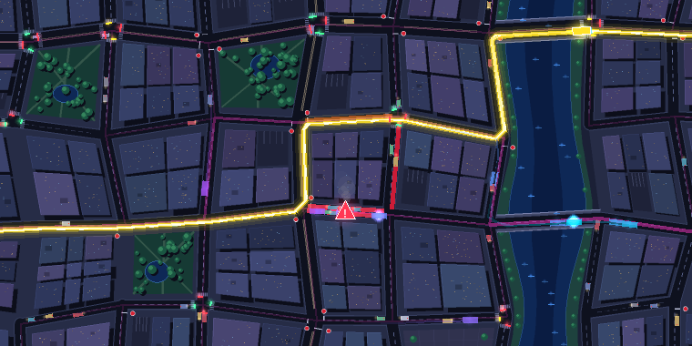
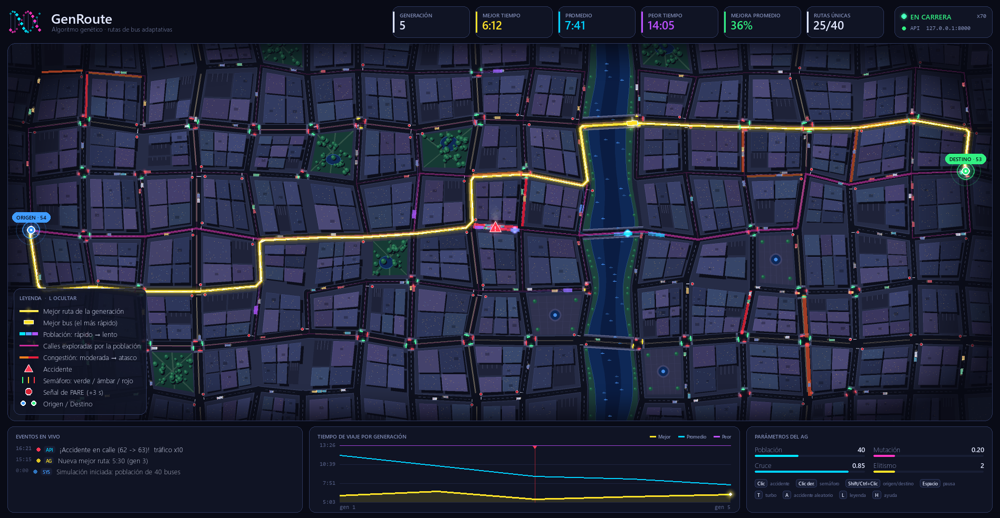

Algoritmos genéticos que aprenden la mejor ruta en una ciudad viva: semáforos, atascos y accidentes en tiempo real.
La "mejor ruta" cambia con el tiempo. No basta con calcularla una vez: hay que seguir buscándola.

Una técnica de optimización inspirada en la evolución natural. En vez de calcular la respuesta, se cría: se parte de muchas soluciones malas y en cada generación sobreviven y se combinan las mejores.
El más apto tiene más hijos.
Los hijos combinan rasgos de sus padres.
Cambios pequeños aportan ideas nuevas.
La población mejora generación tras generación.
John Holland formalizó los algoritmos genéticos en los años 70 (Adaptation in Natural and Artificial Systems, 1975).
| Término | Significado general | En GenRoute |
|---|---|---|
| Individuo | Una solución candidata | Un bus con su ruta |
| Cromosoma / genoma | Cómo se codifica la solución | Lista de nodos: [54, 72, 90, 91, …, 53] |
| Gen | Una pieza del cromosoma | Una intersección de la ruta |
| Población | El conjunto de soluciones | 40 buses (ajustable en vivo) |
| Fitness | Qué tan buena es una solución | 1 / tiempo total de viaje |
| Generación | Una iteración del ciclo | Una "carrera" de todos los buses |
Se repite indefinidamente. Lo que no aporta va desapareciendo y lo útil se hereda.
Aquí la ciudad es un escenario visual para ver evolucionar a un AG. La misma mecánica se aplica a problemas donde no existe un algoritmo exacto.
factor_trafico.Un camino continuo y sin ciclos de ORIGEN a DESTINO. Cada número es una intersección.
Espera real según el segundo exacto de llegada al cruce.
Penalización fija de 3 s.
Penalización de 120 s: el AG aprende a evitarlo.
Cada bus sale del origen y elige calles al azar, con un leve sesgo hacia el destino. Si se encierra, retrocede.
Cada individuo usa un sesgo distinto: unos van casi directos y otros dan rodeos enormes. Así nace la diversidad.
Se toman 3 buses al azar y el más rápido es padre. Es simple, robusto y no necesita normalizar el fitness.
Elitismo: los 2 mejores pasan intactos a la siguiente generación, así que nunca se pierde lo ganado.
Se busca una intersección que ambas rutas comparten y se intercambia todo lo que viene después. Los hijos son siempre rutas válidas. Si al mezclar aparece un bucle, se recorta.
Con probabilidad 0.20 se elige un nodo intermedio y desde ahí se traza un camino aleatorio nuevo hasta el destino.
La selección y el elitismo concentran la población en la mejor ruta conocida.
La mutación y la inmigración (~8 % de rutas nuevas por generación) buscan alternativas.
Por eso "rutas únicas" sube y baja: es el tira y afloja entre ambas fuerzas.
Por eso el AG no "termina": es optimización continua, como un navegador que recalcula.

Cada generación sale en otro momento del reloj. La misma ruta puede encontrar todo en verde o tres rojos seguidos.
Los atascos aleatorios cambian el costo de las calles entre generaciones.
Un accidente o un rojo forzado genera un pico en la gráfica, seguido de la recuperación.
La población entera mejora de forma sostenida: de ~12 min en la generación 1 a ~6 min. El mejor individuo oscila porque el entorno es estocástico, no porque el algoritmo empeore.
FastAPI valida el body con Pydantic y solo encola el comando. Nunca toca la simulación.
Pygame vacía la cola en cada frame y aplica los cambios entre frames, sin condiciones de carrera.
Las métricas vuelven al GET /api/status como una instantánea protegida con Lock.
Todo lo que se pueda codificar como solución y medir con un número se puede evolucionar.
Tasa de aprendizaje, profundidad, regularización… Optuna incluye el muestreador evolutivo NSGA-II para varios objetivos a la vez.
TPOT usa programación genética para evolucionar la secuencia de preprocesamiento, selección de variables y modelo.
El cromosoma es una máscara binaria de columnas y el fitness es la precisión en validación menos el costo de usar más variables.
Evolucionar qué capas usar, en qué orden y cómo conectarlas. Google obtuvo AmoebaNet, entre los mejores clasificadores de ImageNet, con evolución regularizada (Real et al., 2019).
NEAT hace crecer redes desde cero. OpenAI mostró que las Evolution Strategies compiten con el aprendizaje por refuerzo y escalan a miles de CPUs (2017).
Sakana AI (2024) evolucionó recetas para combinar capas y pesos de LLMs abiertos y creó modelos nuevos sin entrenar desde cero.
| Concepto AG | Optimización de prompts |
|---|---|
| Individuo | Un prompt (instrucciones + ejemplos) |
| Fitness | % de aciertos en un set de evaluación |
| Cruce | Un LLM combina lo mejor de dos prompts |
| Mutación | Un LLM reescribe o parafrasea una instrucción |
| Selección | Sobreviven los prompts con mejor puntaje |
Evoluciona código: el LLM propone cambios y evaluadores automáticos hacen de fitness. Encontró un método para multiplicar matrices complejas 4×4 con 48 multiplicaciones y una heurística que recupera ~0.7 % del cómputo de los centros de datos de Google.
Búsqueda evolutiva de programas con un LLM. Halló construcciones nuevas para el problema matemático del cap set (publicado en Nature).
Métodos como AutoDAN usan algoritmos genéticos para encontrar prompts que rompen las protecciones de un modelo y así poder corregirlas.
AFL muta entradas guiándose por la cobertura de código para encontrar fallos. EvoSuite genera pruebas unitarias para Java con un AG.
Rutas de flotas (VRP), carga de camiones, almacenes.
Turnos de hospital, horarios universitarios, planificación de fábricas.
La antena del satélite NASA ST5 (2006) fue diseñada por evolución. También se usa en diseño generativo de piezas.
Ubicación de turbinas en parques eólicos y despacho de redes eléctricas.
Diseño de moléculas candidatas a fármacos con propiedades objetivo.
Portafolios con varios objetivos (riesgo y retorno) y reglas de trading.
Niveles procedurales, balanceo e IA de enemigos.
Controladores de marcha y diseño de la forma del robot.
Generación 1: el caos. 40 rutas aleatorias y un peor tiempo enorme.
Tecla T (turbo): la gráfica se desploma y la ruta dorada se estabiliza.
Clic en la ruta: accidente. La población se reorganiza y encuentra un desvío.
API: forzar un semáforo a ROJO desde el panel web o el celular.
Parámetros: subir la mutación y ver crecer la diversidad.
Población · Fitness · Selección · Cruce · Mutación